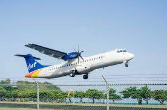

Visit linkedin.com!
Jaleel Joseph
220 Hitchcock Avenue, Milledgeville GA, 31061 | nevon869@gmail.com | linkedin.com/in/jaleeljoseph
Objective: Seeking a full-time position as a first officer.
CERTIFICATES AND LICENSE
- Commercial Pilot: Airplane SEL & MEL; Instrument Airplane
- Certified Flight Instructor: Airplane SEL; Instrument Airplane
- FAA First Class Medical
- FCC Radio License
- Complex Endorsement
- High-Performance Endorsement
FLIGHT TIMES
EXPERIENCE
Pilot and Flight Instructor
Antigua and Barbuda Defense Force | June 2022 – Present | St George, Antigua
- Performed unpredicted medevac flights within the Caribbean, utilizing utmost precision and flight planning.
- Coordinated with the Antigua and Barbuda Coastguard to conduct surveillance flights for the country’s borders.
- Equipped cadets with the skillset and technical knowledge to become professional military
pilots.
Certified Flight Instructor
Skyborne Airline Academy | June 2021 - February 2022 | Vero Beach
- Trained students to be knowledgeable on the skills required to become a certified commercial pilot.
- Remained committed and focused on assisting navigation of a safe and efficient flight operation.
- Ensured the completion of necessary technical knowledge based on a set lesson plan for every student.
EDUCATION
BSC, Information Technology
University of the West Indies
September 2022 - Present
Part 141 Certified Flight Instructor
FLight Safety Academy
August 2020 – December 2020
Diploma, Professional Pilot
Aviator College Aeronautical Science and Technology
August 2018 – December 2020.
